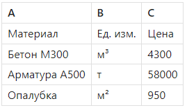

Функция ВПР

Андрей, приветствую! В этом уроке мы разберем одну из самых популярных функций Excel — ВПР (VLOOKUP). Она позволяет искать данные в таблице по заданному значению — например, найти цену материала в прайсе или характеристики бетона по марке. Эта функция экономит массу времени и снижает риск ошибок при ручном копировании. В строительстве это особенно важно — когда нужно быстро подтянуть данные из справочников, прайсов или смет. После этого урока вы сможете настроить «умные» таблицы, которые автоматически подставляют нужную информацию. Поехали!
Что делает функция ВПР
ВПР (в англ. версии — VLOOKUP) — это функция для поиска данных в таблице по ключевому значению.
Она находит строку, где в первом столбце таблицы есть нужное значение, и возвращает данные из указанного столбца справа.
Синтаксис:
=ВПР(что_ищем; где_ищем; номер_столбца; [интервальный_поиск])
- что_ищем — значение, по которому нужно найти строку (например, «Бетон М300»)
- где_ищем — таблица (диапазон), в которой производится поиск
- номер_столбца — номер столбца (внутри диапазона), откуда вернуть значение
- [интервальный_поиск] — 0 (точное совпадение) или 1 (приближенное). В ПТО почти всегда используется 0
Пример. Как подтянуть цену из прайса

=ВПР(«Бетон М300»; A2:C4; 3; 0)
→ Результат: 4300
| Нюанс | Объяснение |
| Поиск всегда идет в первом столбце | Значение должно быть в первом столбце указанного диапазона |
| Функция ищет сверху вниз | Возвращается первое совпадение |
| Всегда используйте 0 в конце | Без этого Excel может вернуть неверный результат |
| Столбец считается внутри диапазона | =ВПР(...; A2:C100; 3; 0) — вернет значение из столбца C |
Смотри ниже в таблице частые ошибки и возможные варианты их решения.
| Ошибка | Причина и решение |
| #Н/Д | Значение не найдено. Проверь написание |
| #ЗНАЧ! или #ССЫЛКА! | Указан несуществующий столбец |
| Появляется неверный результат | Не указали 0 как четвертый аргумент (точный поиск) |
| Excel не нашел значение, хотя оно есть | В таблице могут быть лишние пробелы или скрытые символы |
Используй ВПР для автоматического заполнения форм по шаблону: актов, смет, заявок.
Справочники, которые ты часто используешь (например, «прайс»), удобно держать на отдельном листе.
Для больших таблиц замени ВПР на ИНДЕКС + ПОИСКПОЗ — это надежнее и гибче (следующий урок).
ВПР — это основа автоматизации расчетов для ПТО и инженеров. С его помощью можно исключить ручной ввод цен, единиц измерения, норм — и значительно ускорить оформление документов.
Даже простое использование ВПР в связке с шаблоном может сэкономить часы рутины каждую неделю.
Практическая часть

- Таблица 1: список заказов с названиями материалов
- Таблица 2 (справочник): материалы и их цены
- Нужно подтянуть цену материала из справочника по его названию:
=ВПР(B2; $E$2:$F$100; 2; 0) - Смотрим на ошибки:
#Н/Д — если нет такого значения в справочнике
Ошибки из-за относительных ссылок (не закрепили таблицу) - Вот как исправить:
Используем $E$2:$F$100 — абсолютные ссылки
Добавляем ЕСЛИОШИБКА:
=ЕСЛИОШИБКА(ВПР(...); «Нет в справочнике»)
Для повышения скорости и удобства — сортируй справочник по алфавиту, а также обновляй его в отдельном листе, не трогая основную таблицу.